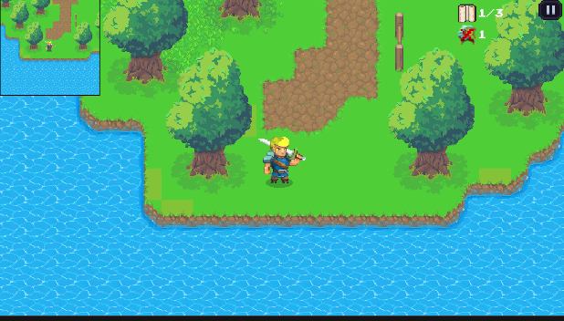
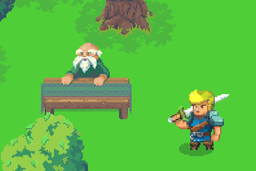
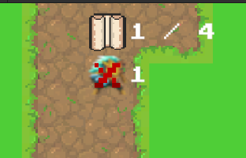
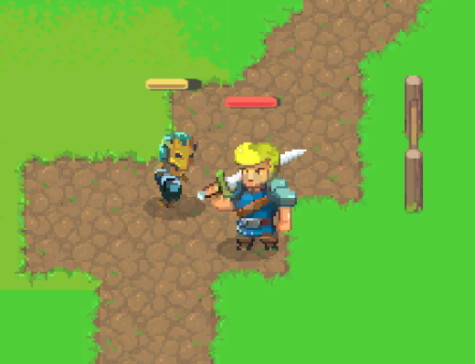

AG08_GrassLand
Dự án Solo game phiêu lưu Story-driven ở môi trường thế giới mở rộng lớn.
Unity
2D
Open
World Gameplay
Story
RPG
Chi tiết Dự án
AG08_GrassLand tập trung vào việc tạo ra cảm giác thư giãn thông qua môi trường cỏ xanh ngát, hệ thống bóng râm cây cối mượt mà (Baked/Realtime Shadows hỗn hợp) và hiệu ứng thị giác tươi sáng, ấm áp.
Những điểm nhấn kỹ thuật:
- Optimization: Sử dụng LOD (Level of Detail), Occlusion Culling để render hàng rào cây cỏ số lượng lớn mà vãn duy trì FPS tốt.
- Hệ thống Nhiệm vụ: Quản lý quest line trạng thái, kích hoạt Cutscene (Cinemachine) khi người chơi tới các Zone đặc biệt.
- Hệ thống Âm thanh 2D: Sử dụng AudioMixer Settings trong Unity mang lại độ chân thực về khoảng cách suối chảy, tiếng xào xạc cành lá rẽ gió của môi trường xung quanh.
- Chuyển động mượt mà: Animator được cấu hình kỹ với Blend Tree, đáp ứng chuẩn Input chuột và phím.
Môi Trường In-Game Sinh Động



